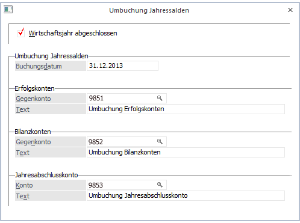

Diese Funktionalität wurde für die Anforderungen der italienischen Finanzbuchhaltung entwickelt. Bei den erzeugten Abschlussbuchungen handelt es sich nicht um tatsächliche Buchungen, die fix ins Journal geschrieben werden, sondern um virtuelle Buchungen, die bei der Ausgabe von Journal, Kontoblatt und Buchungs-Info dynamisch mit anzeigt werden. Somit ersetzen diese Buchungen nicht die manuellen Jahresabschlussbuchungen.

Ø Wirtschaftsjahr abgeschlossen
Erst wenn diese Checkbox aktiviert wurde, können weitere Werte erfasst werden.
Ø Gegenkonto/Konto
In den beiden Feldern "Gegenkonto" kann das jeweilige Abschlusskonto eingetragen werden, gegen das die Erfolgskonten bzw. die Bilanzkonten abgeschlossen werden sollen. Das Konto aus dem Feld "Jahresabschlusskonto" wird am Ende zum Abschluss des Gegenkontos für die Erfolgskonten verwendet und wird wiederum durch das Gegenkonto der Bilanzkonten abgeschlossen.
Ø Text
Hier kann ein beliebiger Text eingeben werden, der dann bei den Buchungen mit angedruckt wird.
Nachdem die Checkbox "Wirtschaftsjahr abgeschlossen" aktiviert wurde, können die Gegenkonten für die Abschlussbuchungen eingegeben werden. Hier müssen 3 verschiedene Bilanzkonten hinterlegt werden. Die Eingaben können erst gespeichert werden, wenn alle Eingaben gültig sind. Beim Speichern werden zusätzlich alle Buchungsperioden gesperrt und es erscheint die Meldung: "Wirtschaftsjahr abgeschlossen".
Im Buchungsjournal, der Buchungs-Info und dem Kontoblatt (wenn die Abschlussperiode aktiviert wurde) werden die errechneten Abschlussbuchungen mit dem nur von dieser Funktion verwendeten Buchungsschlüssel "UJ" angedruckt.
Achtung
Für diese 3 Konten dürfen keine Buchungen vorhanden sein!